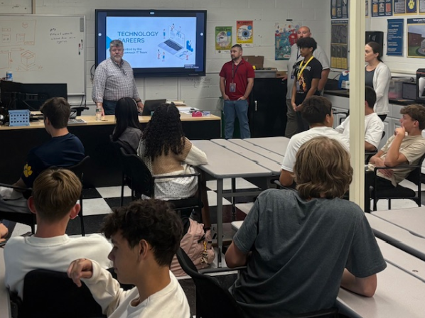
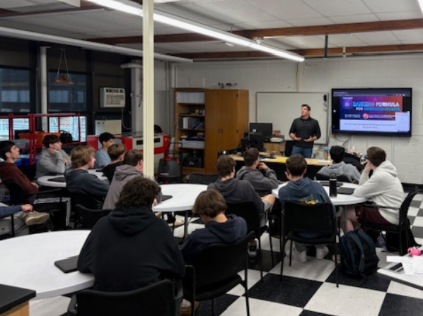
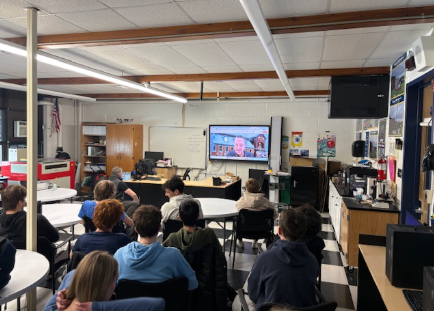
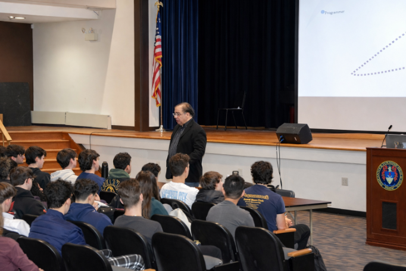
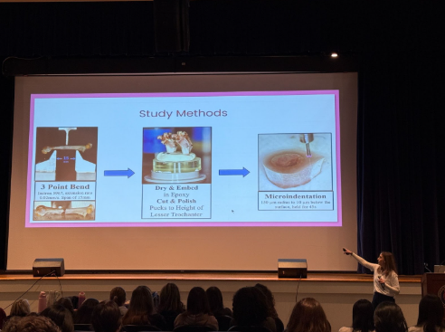
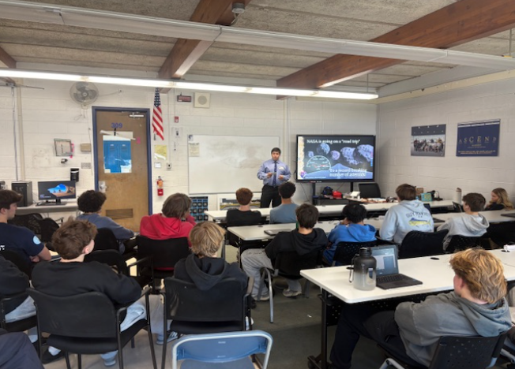
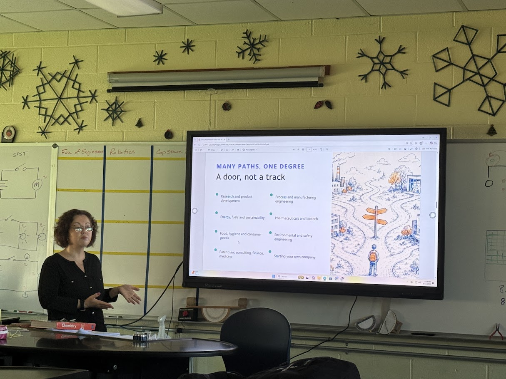
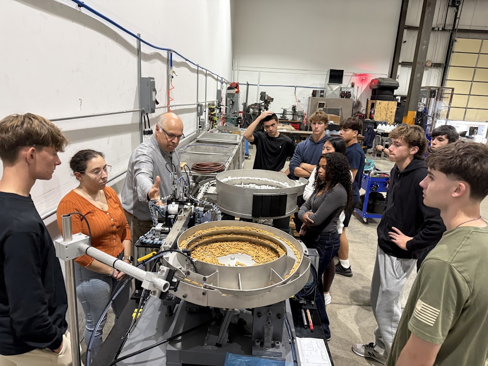

Matt Shea
Matt Shea, Chief Technology Officer, and the PTHS IT Team visited our junior STEM Academy class to discuss career opportunities in Information Technology and the certifications necessary for a career in IT.

John Tedesco
John Tedesco is an entrepreneur who specializes in website optimization for Generac generator dealers. Mr. Tedesco spoke to us about adapting to the new landscape of AI web searches and leveraging AI as a tool to generate more traffic to the dealer websites.

Steve Hess
A representative from Martin Guitar Co. in Nazareth PA spoke to us about the history of the company, AutoCAD files, sourcing wood from around the world, and the manufacturing process. Steve Hess also spoke about the changing business landscape as it relates musical styles, citing the 1970s and 80s Disco Era as the single biggest historical threat to the company.

Anthony Scriffignano
World renowned data scientist Dr. Anthony Scriffignano spoke to our class about careers in data science and cyber security, as well as the future of AI, cryptocurrency, and general wisdom from a career working for fortune 500 companies and advising policy makers at the white house.

Gia Perdikas
Biomedical engineer Gia Perdikas and graduate of TCNJ spoke to the STEM and Allied Health classes regarding her education, career path, and research.

Peter Ulrich
Peter Ulrich, senior at Embry-Riddle University, spoke to our juniors and seniors about his Aerospace Engineering program and his work on the NASA Lucy space probes to inspect nearby asteroids.

Derya Onbilger
Derya Gulsen Onbilger, Associate Director of Technical Solutions at BD Pharm Systems, explained her role as the biotechnology corporate leader, detailing the challenges and methods with needing to create simple-to-use injection devices. Samples of her work were passed around the class to help perceive the complexity of a singular injector.

Kinesys Automation Trip
On a school trip to Kinesys Automation in Pequannock, we learned a little about the history of the company and how they function. Kinesys is commisioned from bigger companies to create machines to automate functions. Two such examples were a marker tipping machine and a pallete stacker. Many of these presumably basic tasks have immense amounts of work put into it, with multiple lines of code and specialized machines.